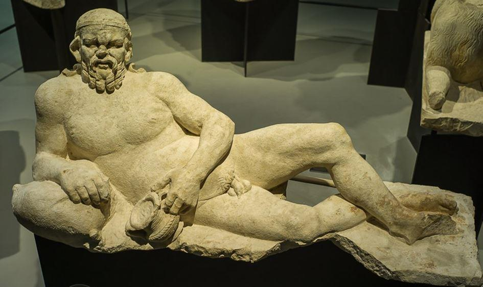
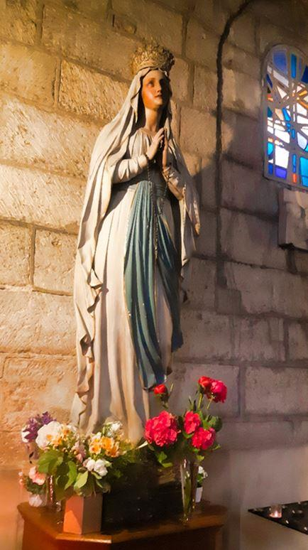
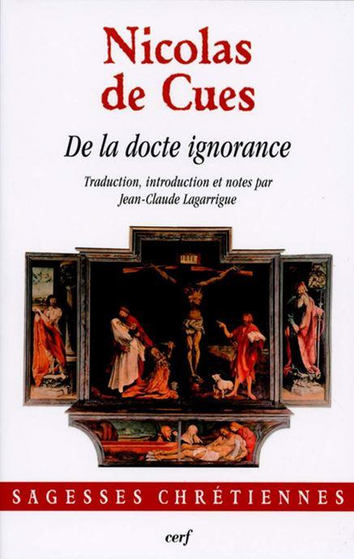

Le danger guettant chaque civilisation, quelle qu’elle soit, ce n’est pas la mort, mais bien la peur de la mort. L’asepsie sociale que celle-ci entraine est, indubitablement, l’indice d’une décadence achevée !
Un mythe, que l’on a par trop tendance à oublier, en témoigne. Cadmos, fondateur de la ville de Thèbes, a deux petits-fils. Il confie la gestion de la cité au premier d’entre eux : Penthée. Il s’agit d’un sage gestionnaire, le bon technocrate du moment, appliquant, avec efficacité, toutes les mesures, rationnellement pensées, censées assurer le bien-être de ses concitoyens. Mais ce bien-être matériel, c’est-à- dire quantitatif, mécaniciste, tend à oublier un mieux-être, bien plus qualitatif, où le plaisir d’être a sa part.
En bref Thèbes a racheté le fait de ne pas mourir de faim par celui de mourir d’ennui.
C’est alors que les femmes de la cité, conduites par Agavé, la mère de Penthée, vont quérir, de l’autre côté de la mer Égée, l’autre petit fils de Cadmos : Dionysos. Figure complexe s’il en est ! C’est un météque ne résidant pas en Grèce même. Il est cet ambigu sexuel, que les sculptures antiques représentent comme « bi-frons » : une face d’adolescent androgyne, une autre de grand gaillard barbu. Enfin, à la différence des autres dieux « ouraniens », tournés vers le ciel, c’est une divinité chtonienne, de cette terre-ci (« chthonos »). C’est un autochtone, attaché aux valeurs sensibles, voire sensualistes.
Ces femmes introduisent donc Dionysos dans la cité. Ce qui génère les fameuses « dionysies » ou bacchanales, engendrant quelques violences ritualisées et canalisées. Le sang coule a minima : seul Penthée est tué. Mais, dans cette animation, Thèbes récupère son âme. Et grâce à cette « homéopathisation » de la mort, elle retrouve le goût de vivre.
Ce petit apologue peut nous aider à comprendre que c’est en acceptant de vivre sa mort de tous les jours que l’on peut mériter de vivre. La reconnaissance de la finitude humaine étant cela-même qui conforte le vouloir-vivre, individuel et collectif, caractérisant toutes les sociétés équilibrées. Peut-être est-ce cela dont il est question dans la crise civilisationnelle en cours dont la crise sanitaire n’est qu’un indice avant-coureur.
La France, foyer où s’élaborèrent les grandes et belles valeurs du monde moderne, éprouve, toutes tendances théoriques confondues, une véritable crainte devant la mutation de fond s’amorçant sous nos yeux. D’où la multiplicité des réactions, celles des élites technocratiques, qui, au-delà de leurs apparences rationnelles, utilisant les divers paravents scientifiques, ne sont rien moins qu’émotionnelles. Ce qui est bien curieux, car cette émotionalité est proche de celle du peuple. Mais là, stigmatisation de « populisme » aidant, elle sera taxée de « complotisme » !
Ces mêmes réactions, politiciennes, « scientistes », journalistiques, ne veulent, en rien, reconnaître la distinction, proposée par Max Weber entre « le savant et le politique ». Distinction conduisant comme nous le rappelait à loisir un de mes maîtres, Julien Freund, à une stricte « neutralité axiologique ». Chemin de pensée se contentant de constater ce qui est et non ce qui « devrait être », ce qui pourrait être ou ce que l’on aimerait qui soit etc. C’est cela la « pertinence » propre à la démarche universitaire, éclairant ceux qui en fonction de légitimes engagements politiques, sociaux veulent et peuvent s’en servir.
Mais là encore l’ambiance émotionnelle du moment est loin de favoriser la pensée et l’action sereines. Et tout comme le politique, le journaliste, l’expert se parant des cautions supposées scientifiques, nombreux sont les supposés chercheurs qui sont « engagés » , militant pour des causes qui , toutes légitimes qu’elles soient, n’ont rien à voir avec la démarche intellectuelle . Celle-ci, pour reprendre, encore, une distinction proposée par M. Weber, se contentant des « jugements de fait » n’ayant rien à voir avec les « jugements de valeur » propres à la morale.
Mais pour éviter le moralisme propre à l’oligarchie médiatico-politique, il convient d’éviter la confusion des mots : « mal nommer les choses contribue au malheur du monde » (Albert Camus). Il est, on ne peut plus, urgent de réveiller le sens des mots.
D’où la nécessité de rappeler que la morale est rien moins qu’éthique, et que le drame n’a rien à voir avec le tragique.
La modernité est essentiellement dramatique : le drame (« drao » en grec) consiste à trouver une solution, une résolution. Le cerveau reptilien des élites modernes s’emploie à rechercher une société parfaite à venir. Karl Marx l’a bien résumé : « chaque société se pose les problèmes qu’elle peut résoudre ». La dialectique en est l’instrument de choix. Dans la « marxisation » contemporaine des esprits, censément éclairés, le concept hégélien de « dépassement » (Aufhebung) est le b.a.-ba de toute analyse.
C’est en fonction de ce dépassement « dramatique » que la technocratie édicte des normes, des règles, des lois supposées intangibles assurant les fondations du moralisme ambiant. C’est cela la « violence totalitaire » d’un État surplombant qui, grâce à un « service public » ayant, de fait, mis le public à son service, s’emploie à créer ce « meilleur des mondes » où la soumission à la tyrannie sanitaire préfigure la dictature d’une aliénation « soft », celle d’un esclavage consenti.
Esclavage dont le fondement essentiel est la promesse d’un bonheur assuré. N’est-ce point cela que prophétisait le sympathique Saint Just (le bien nommé !) qui se servait de la « Terreur » et de la guillotine, pour promouvoir l’avènement du bonheur, « cette idée neuve en Europe ». Et ce parce que l’on peut, dans une humanité régénérée, dépasser le mal, la dysfonction, la maladie, voire la mort. Bon résumé, quelque peu caricatural, du mythe du progrès initié par la philosophie des Lumières. C’est de cela que témoigne le transhumanisme qui en est l’héritier direct. C’est cela qui sert de fondement au bien-être matérialiste, quantitatif, mécaniciste, caractérisant une époque moderne en agonie.
Tout autre est le fondement de ce que fut la pré modernité, et de ce qu’est la postmodernité. Il s’agit d’accepter, puis de s’ajuster et de s’accommoder à la finitude humaine. C’est la nécessité (« ananké »), stoïcisme oblige, rappelant qu’il convient de s’accorder, tant bien que mal, à ce qui est. Ressurgissement du « sentiment tragique de l’existence » (Miguel de Unamuno). Il s’agit là d’une sensibilité populaire, voire d’un instinct ancestral venu du fond des âges, rappelant qu’au-delà ou en deçà des « droits », il y a des obligations nous rendant dépendant de la nature- mère, de la communauté, en bref d’une transcendance outrepassant l’égoïsme égotiste caractérisant l’individualisme moderne . Ce que rappelle la « nécessité, c’est que le tragique est aporique, c’est-à-dire sans solution a priori.
Gilbert Durand, à la suite de S. Lupasco, parlait, à l’opposé de la dialectique, d’une logique « contradictorielle ». Le contraire : mal, dysfonctions, mort… ne peut être dépassé. Il faut, comme le rappelle la sagesse populaire, « faire avec ». Le catholicisme traditionnel rappelait cela. Le culte marial de « Notre-Dame de la bonne mort » (église Saint Porchaire à Poitiers) ou celui de « Notre-Dame du bien mourir » (Abbaye de Fongombault), ou le Quatrième mystère Glorieux du Rosaire, celui de l’Assomption de la Vierge Marie, en témoignent.
Ainsi parmi bien d’autres caractéristiques essentielles, l’analyse propre à la postmodernité, constate-t-elle, avec lucidité, le renouveau de la notion de limite. La frontière, le territoire, le terroir etc. redeviennent d’actualité. Ainsi que je l’ai, à de multiples reprises, indiqué, le lieu fait lien.
Pour reprendre une dialogie du philosophe Georg Simmel, le « Pont et la Porte ». Si le pont a caractérisé la modernité, le désir de la porte retrouve une force et vigueur indéniable. Un oxymore peut résumer cela : « l’enracinement dynamique ! »
S’accommoder de la finitude ou s’accorder à elle, voilà bien ce que la paranoïa des Lumières s’est employée, avec constance, à refuser. Refus du clair-obscur qu’est toute existence, individualiste ou collective. Refus de l’ombre faisant de chaque homme un dangereux « zombie », un mort vivant capable, dés lors, des pires violences sanglantes. Refus de l’ombre suscitant des tribus de « zombies » se repaissant de carnages on ne peut plus sanguinaires. Et ce au nom d’un fanatisme religieux au plus haut point débridé.
Il s’agit là d’un paradoxe que j’ai rappelé, avec force (La Nostalgie du sacré, Cerf, 2020). C’est le rouleau compresseur du rationalisme qui, en désenchantant le monde, a pu susciter les regains pervers (« per via », prenant des voies détournées) d’un tel fanatisme. Dont l’islamisme est, actuellement, l’expression achevée.
Sur un tel fanatisme sanglant, peut-être n’est-il pas inutile de rappeler, avec Joseph de Maistre, que la « divinité des Mahométans est un dieu des razzias ». Ou encore en citant les premières pages du très beau livre d’Ernest Renan sur l’Averroïsme, que « quand Averroès mourut, en 1198, la philosophie arabe perdit en lui son dernier représentant et le triomphe du Coran sur la libre pensée fut assuré pour au moins six-cents ans. ». Ce qui rappelle, avec justesse, que seule la pensée libre, dans sa concision craquante de sens, échappe à la logorrhée habituelle des élites déconnectées.
La pensée libre apprend à s’accorder, tant bien que mal, à ce qui est. Par exemple s’ajuster à l’agressivité structurelle de la nature humaine, ou encore, dans la crainte et le tremblement, savoir vivre une violence maîtrisée ou ritualisée. En ce sens la métaphore de l’ombre a pour fonction de rendre attentif au fait que c’est en sachant intégrer l’élément non-rationnel, et à bien des égards émotionnel, que l’on arrive à une société équilibrée. Pour reprendre, ici, une remarque de Martin Heidegger : accepter l’animalité permet d’éviter la bestialité. Et c’est quand on refuse une telle dialogie que les agressions multiples et diverses peuvent se multiplier et de nos jours, l’actualité n’est pas avare d’exemples en ce sens.
En effet, au-delà du « divertissement » politicien ou celui, ce qui revient au même, propre à la « médiocrité de la médiacratie », dont les discours se situent toujours à la surface de l’être-social, à l’encontre de tout cela, il faut rappeler, avec force, que l’humaine nature est structurellement complexe. Et qu’il est, donc, nécessaire, d’accepter son entièreté dans laquelle la vie et la mort, le bien et le mal sont, inextricablement, mêlés. Voilà ce qu’est l’« obligation » naturelle rappelant, au-delà de la « logique disjonctive » (ou… ou), propre à la modernité, qu’il existe une logique « conjonctive » (et… et) que la sagesse populaire, elle, n’a en rien oublié.
Voilà le constat qu’il faut, avec lucidité, faire. Et ce afin d’éclairer ceux dont c’est la fonction d’agir : les politiques en particulier ainsi que les « responsables » de tous poils. En reprenant une belle expression du cardinal Nicolas de Cues (« De la docte ignorance ») : la « coincidentia oppositorum », la coïncidence des choses opposées, doit se faire en ayant le courage de rejeter ce qui ne peut pas, ne doit pas être intégré : par exemple, de nos jours, le fanatisme structurel de l’islam. Et ce afin d’aboutir à une harmonie conflictuelle, ou à un équilibre tensionnel.
On n’est plus, dès lors, dans la morale universaliste, propre à la modernité, dont la saturation est, on ne peut plus évidente. L’éthique quant à elle, (« ethos » renvoyant aux manières d’être, au séjour partagé, aux habitudes communes etc) sait, d’un savoir incorporé, que, en ses diverses manifestations, la finitude est la conséquence logique de l’obligation naturelle qui nous constitue essentiellement.
L’éthique, elle accepte et contrôle la part d’ombre nous constituant. Je rappelle ici quelques titres de penseurs aigus, comme Ernst Bloch parlant de « l’instant obscur » ou Georges Bataille dissertant sur « la part maudite ». C’est en m’inspirant de ces auteurs que moi-même j’ai rappelé qu’il existe une « part du diable » avec laquelle nous avons à composer. L’éthique postmoderne en gestation consiste à reconnaître cette part d’ombre en rappelant au-delà de la grande idéologie des Lumières que, comme je l’ai rappelé plus haut, c’est le clair-obscur qui est le propre même de toute existence individuelle ou collective.
C’est cela qui constitue l’idéal communautaire propre au « temps des tribus » en gestation. Voilà, également, en quoi la postmodernité est essentiellement tragique.

Partager cette page